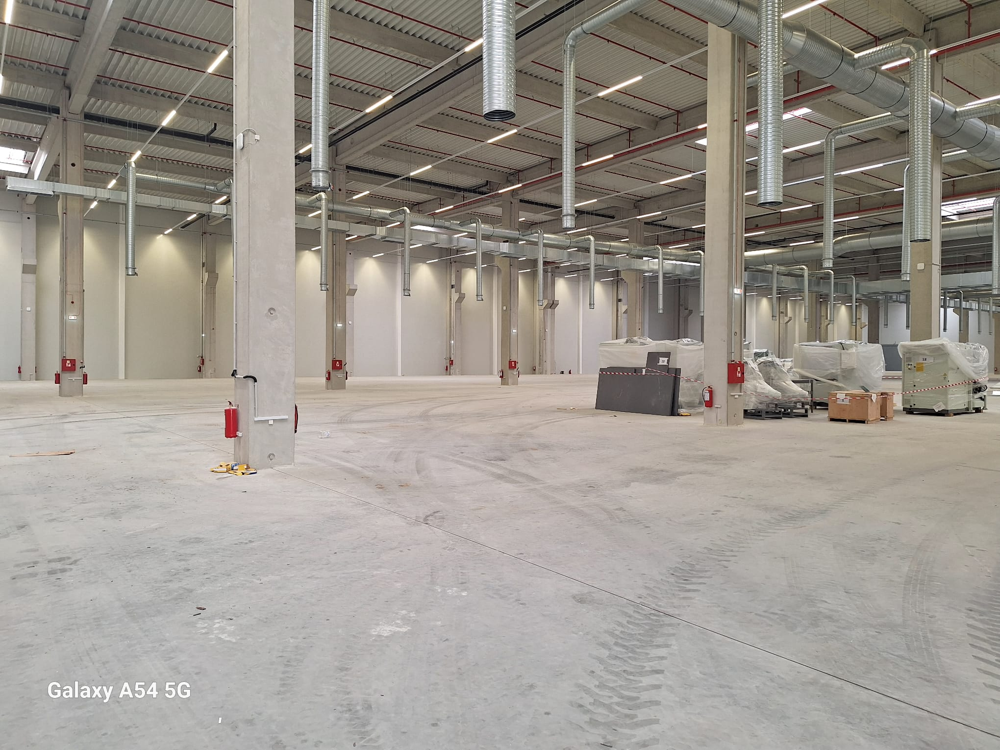
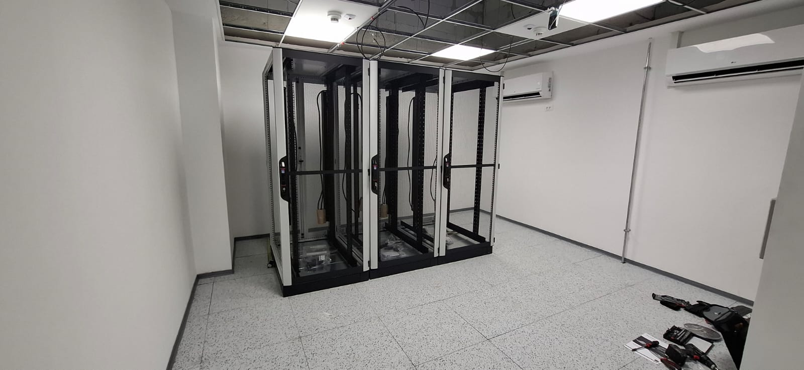
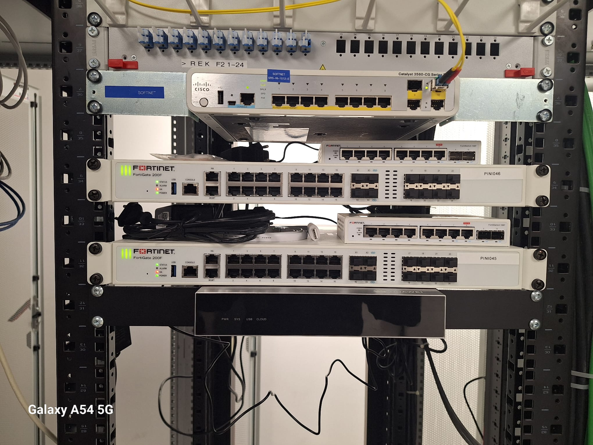
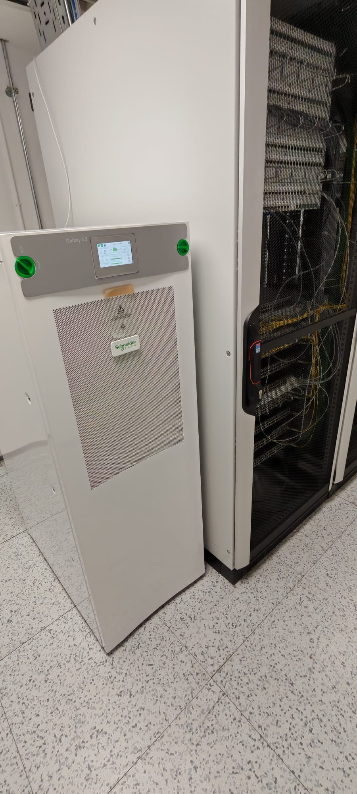

Strukturno kabliranje
Kompletno podatkovno i energetsko kabliranje kroz ceo objekat, kao osnova svih ostalih sistema.

Kompletna tehnološka infrastruktura za novi proizvodni objekat u Nišu, od strukturnog kabliranja i UPS sistema do mreže, kontrole pristupa i video-nadzora, isporučena kao jedinstveno integrisano rešenje u zahtevnom roku izgradnje.

BOGE Rubber & Plastics otvorio je novi proizvodni objekat u Nišu. Objektu je bila potrebna kompletna tehnološka infrastruktura, projektovana i izvedena paralelno sa izgradnjom, u okviru strogo definisanog vremenskog plana.
TRS je isporučio sve sisteme kao jedinstvenu celinu: strukturno kabliranje, besprekidno napajanje, mrežnu infrastrukturu, kontrolu pristupa i video-nadzor, uz koordinaciju radova na aktivnom gradilištu.
Svi sistemi objekta projektovani su i izvedeni u okviru jedne koordinisane realizacije.
Kompletno podatkovno i energetsko kabliranje kroz ceo objekat, kao osnova svih ostalih sistema.
Besprekidno napajanje kritičnih sistema, na industrijskoj Schneider Electric Galaxy platformi.
Svičing i rutiranje na Huawei i Fortinet opremi, za pouzdano povezivanje proizvodnih i poslovnih sistema.
Upravljanje pristupom vratima i zonama kroz ceo kompleks, u skladu sa bezbednosnim politikama klijenta.
Kamere raspoređene kroz ceo objekat i okolinu, za potpunu pokrivenost lokacije.
Svi sistemi objedinjeni u okviru jedne isporuke, sa jednom tačkom odgovornosti za celokupnu infrastrukturu.
Server sala, aktivna mrežna oprema i besprekidno napajanje izvedeni su kao jedinstvena tehnička celina.



Kompletna IT i bezbednosna infrastruktura isporučena je u planiranom roku, uz rad na aktivnom gradilištu i koordinaciju sa ostalim izvođačima.
Industrijski UPS sistemi obezbeđuju redundantnu zaštitu napajanja za sve kritične sisteme objekta.
Kabliranje, mreža, UPS, kontrola pristupa i CCTV realizovani su kroz jednog izvođača, što pojednostavljuje i izgradnju i kasnije održavanje.